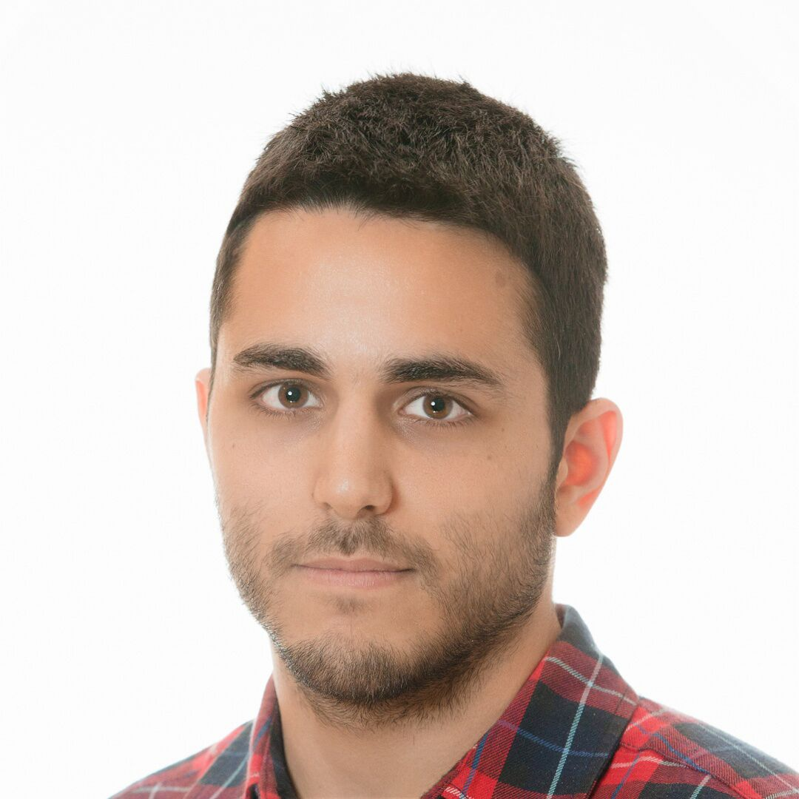

Panos Antonakos
Personal Information

Lead Software Engineer with 10+ years of experience in the design & implementation of modular and scalable service-oriented architectures using Java, Ruby, Node.js and Python.
Experience
Novartis2024 - Now
Data Science Lead
Workable2018 - 2024
Lead Software Engineer of Data Science
European Dynamics2018 - 2018
Lead Software Engineer of Content Management System towards the Swiss state
Upstream2015 - 2018
Lead Software Engineer of the Integration team.
Developed decoupled web applications deployed to Tomcat servlet containers on CentOS
European Dynamics2012 - 2015
Software Engineer in Java Development,
Documentum Content Management System and Solaris operating system
Education
National Technical University of Athens
MEng in Electrical and Computer Engineering2012
Certifications
- Oracle Certified Professional, JavaSE 8 Programmer2017
- Oracle Certified Associate, JavaSE 8 Programmer2016
- Red Hat Certified System Administrator (RHCSA)2016
- Certified ScrumMaster®2015
- 200-120 CCNA: Routing and Switching2014
Languages
- Greek: Native Speaker
- English: Certificate of Proficiency, University of Michigan
- German: Mittelstufe Zertifikat, Goethe Institute
- Italian: 2 years studies